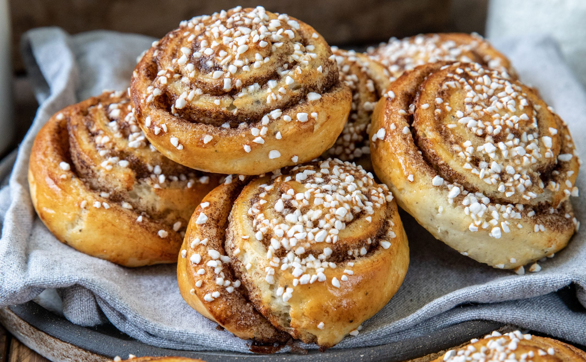

Kanelbullar
Kanelbullen är ett känt bakverk gjort på vetemjöl med kanelfyllning. På 1700 talet i Philadelphia (USA) tillkom kanelbullar med kanel, socker, honung och russin. Dagens kanelbulle tillkom förmodligen runt 1920 talet i Sverige men redan på 1800 talet något form av vetebröd som kallades “kanelbulle
